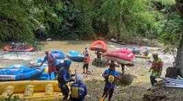
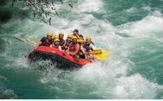
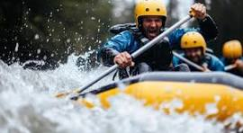

Rafting Adventures & Trips information

Middle Gorge (The Hallmark Trip)
This is our most popular trip, suitable for age 6 and up and lasting about 3.5-4 hours. It's great choice for mixed-skill groups, stating with action packed Class III+ rapids and scenic floating through a forested canyon. The trip includes the optional challenge of Husum Falls, a Class V waterfall, which guests can choose to run or walk around.

Middle/Lower Gorge Combo (The Extended Adventure)
This longer day trip combines the Middle Gorge section with the lower Gorge, making for a more full-day experience on the water. Its offers a more relaxed float through scenery and typically include the optional descent of Husum Falls, though you should check the seasonal schedule as it usually open from July onward.

Upper Gorge (The High Adventure Trip)
This is our company most aggressive commercial trip, using smaller "Mini Rafts" to make the rapids feel bigger. It's a physically demanding trip requiring a strong paddling and a good comfort level with the possibility of swimming in rapids. Like the other trips, it conclude with the legendary drop over Husum Falls
| Trip name | Difficulty | Duration | Distance | Price (per person) | Season | Highlight |
|---|---|---|---|---|---|---|
| Beginners's Breeze | Class I-II (Easy) | 2 hours | 4 miles | $45 | May-Sept | Family-friendly, scenic floats, light splashes |
| River Runners | Class III (Intermediate) | Half day (4hrs) | 8 miles | $75 | April-Oct | Moderate rapids, swimming holes, cliff jumps |
| Thunder Gorge | Class IV (Advance) | Full day (6 hrs) | 12 miles | $110 | May-Sept | Continuos action, 10+ named rapids, lunch included |
| Midnight Coldness | Class III-IV (Int/Adv) | 2 hours (night trip) | 6 miles | $95 | June-Aug | LED raft lighting, starlit paddling, glow gear |
| Expedition Extreme | Class V (Expert) | 2 days (1 overnight) | 24 miles | $295 | July-Aug | Camping on riverbank, Class V drops, Pro guide required |
| Corporate Chill | Class II-III (Easy/ Int) | Half day + BBQ | 6 miles | $120 | May-Sept | Team building games, riverside launch, photo package |
Notes:
* Difficulty follows the International scale of River Difficulty (Class I-VI).
* Price do not include wetsuit rental ($10) or helmet cam ($25).
* Minimum age varies by trip (4+ for Beginner's Breeze, 16+ for Expedition Extreme).